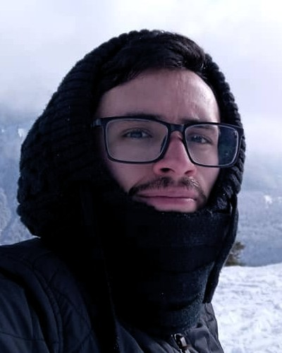

Début

Je m'intéresse à l'apprentissage automatique et à la vision par ordinateur (CV), sur de nouvelles technologies
ou applications. Actuellement, je travaille sur l'IA explicative dans la reconnaissance d'images ; bien que je
m'intéresse aux modèles fondamentaux, ainsi qu'aux Modèles de Langage Volumineux (LLMs), et à l'état de l'art
global comme la famille de méthodes transformer et plus récemment MAMBA.
Je suis actuellement en train de terminer mon doctorat à l'École Centrale Marseille au sein du groupe de recherche
QARMA, sous la direction de
Ronan Sicre,
Stéphane Ayache et
Yannis Avrithis, sur
le sujet des modèles de reconnaissance d'images explicatifs.
J'ai l'intention de continuer à faire de la recherche dans ce domaine et de mettre en lumière le comportement de
boîte noire des modèles d'apprentissage profond, ce qui permettra la conception de meilleures architectures et
assurera l'équité et la responsabilité des décisions.
Recherche

CA-Stream: Attention-based pooling for interpretable image recognition
F. Torres, H. Zhang, R. Sicre, S. Ayache, Y. Avrithis.
CVPR Workshop on Explainable AI, 2024.
Prochainement.
Prochainement.


Hand Pose Estimation for Pediatric Bone Age Assessment
M. C. Escobar, C. I. González, F. Torres, L. Daza, G. Triana and P. Arbeláez.
MICCAI-2019 Oral.
pdf
BibTex
Lieu du Project
À propos
J'ai 29 ans, passionné de musique, d'histoire et d'astronomie. Pendant mes études universitaires, je me suis passionné pour la programmation, et depuis lors, je travaille sur la vision par ordinateur et l'apprentissage profond. J'étais bon en jogging jusqu'à ce que je prenne une montagne sur le genou gauche. J'adore passer du temps à regarder le ciel, apprendre des langues et écouter de la musique ; surtout si je peux la reproduire en jouant de ma guitare ou de ma basse. Chaque fois que j'en ai l'occasion, je construis aussi des maquettes d'avions de l'époque de la Seconde Guerre mondiale. Depuis la seconde moitié de 2021, j'ai découvert une appréciation pour la cuisine asiatique, en particulier les plats épicés chinois de la région de Guizhou.